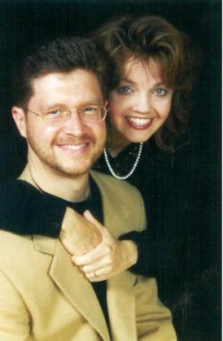
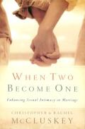
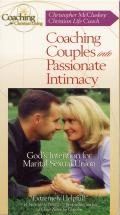
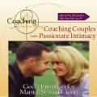
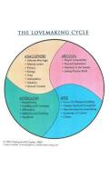
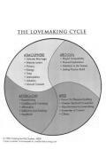

|
|  |
Welcome
to the official bookstore for When Two Become One
and related resources on God's plan for sexuality. You will
find audio and video presentations of material from the book including
The Lovemaking Cycle©, as well as
laminated copies and a PowerPoint presentation of the model which
are useful in teaching and marital/premarital counseling. |

|
| All
purchases are secured through VeriSign and will be shipped directly
to your mailing address from our warehouse at Coaching for Christian
Living. Please email us
with questions or to book speaking engagements, arrange bulk purchases,
or if we can be of service in any other way. |
|
| |
|
| When
Two Become One
By Christopher & Rachel McCluskey
Sexual issues are often cited as one of the primary reasons for marital
conflict and divorce. In When Two Become One, certified sex therapist
Christopher McCluskey and his wife, Rachel, offer much more than a how-to
book on better sex. Writing from a Christian perspective, they address
many of the common issues with which couples struggle. This practical
and detailed resource is one of the few that blend the physical, mental,
emotional, spiritual and relational aspects of marriage with the sexual,
offering a vision of lovemaking that facilitates a deeper experience
of intimacy on all planes of the relationship.
@ $19.99 |
|
|  |
 |
Coaching Couple into Passionate Intimacy
By Christopher McCluskey MSW
Examines God's intentions for marital sexual union. A two-part
live video presentation by Christopher McCluskey of The Lovemaking
Cycle© and core material from When Two Become One.
Ideal for use with adult Sunday school classes, marriage retreats,
premarital counseling, marriage therapy and private use. (Run
time 80 minutes.) |
|
|
|
|
|
|
| Sexuality & Singles: Glorifying
God with Your Body
A two-part audio presentation by Christopher McCluskey recorded
live at John Brown University addressing adult singles and sexuality.
Covers material from When Two Become One on a theology
of sexuality and how to glorify God in dating relationships. (Run
time 60 minutes.) |
|
| |
(Audio CD)
@ 14.95 |
|
|


The Lovemaking Cycle©
High quality laminated poster of the model as detailed in When
Two Become One for use with counseling clients and small groups.
(Permission to photocopy poster for handouts is granted with purchase.)
| 8.5" x 11" Black & White |
$9.95 |
| 8.5" x 11" Color |
$9.95 |
| 11" x 14" Black & White |
$14.95 |
| 11" x 14" Color |
$14.95 |
|
|
The
Lovemaking Cycle©
(24-Slide Powerpoint Presentation)
By Christopher and Rachel McCluskey
Powerpoint presentation of the model as detailed in When Two Become
One, developing the model in stages - excellent for presentations
before large audiences.
@ $19.95 |
|
|
|
{kind=link}
{kind=link}
{kind=link}
{kind=link}
{kind=link}
{kind=link}